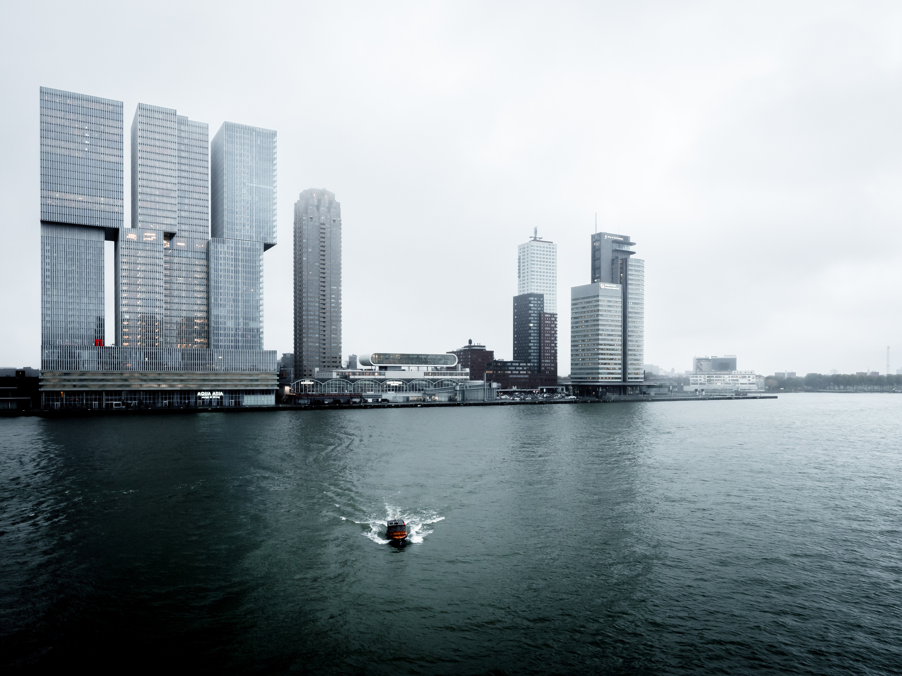
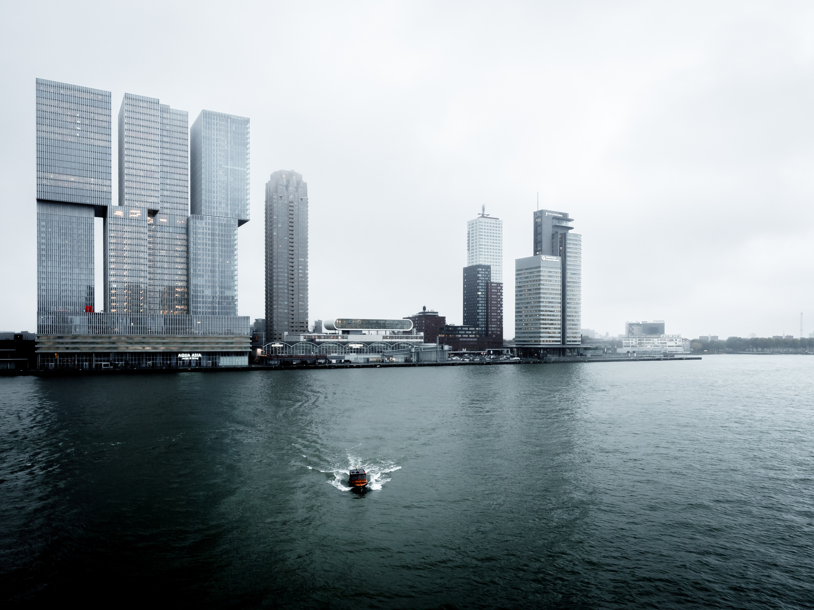

Helicopter tour
Zweef in de lucht terwijl de grond onder je achteruitgaat en kijk hoe een aantal van de beroemdste parken, gebouwen en bezienswaardigheden van de stad in zicht komen. Dichtbij het centrum van Manhattan kun je Governor’s Island, Ground Zero, het Vrijheidsbeeld en de grotere haven van New York zien. Ga verder langs de rand van het eiland en bewonder onderweg het majestueuze uitzicht op wolkenkrabbers, voordat je de USS Intrepid bereikt, een vliegdekschip uit de Tweede Wereldoorlog dat nu een museum herbergt.